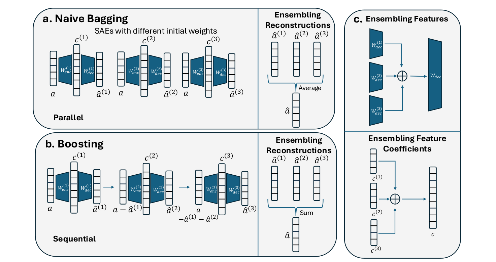
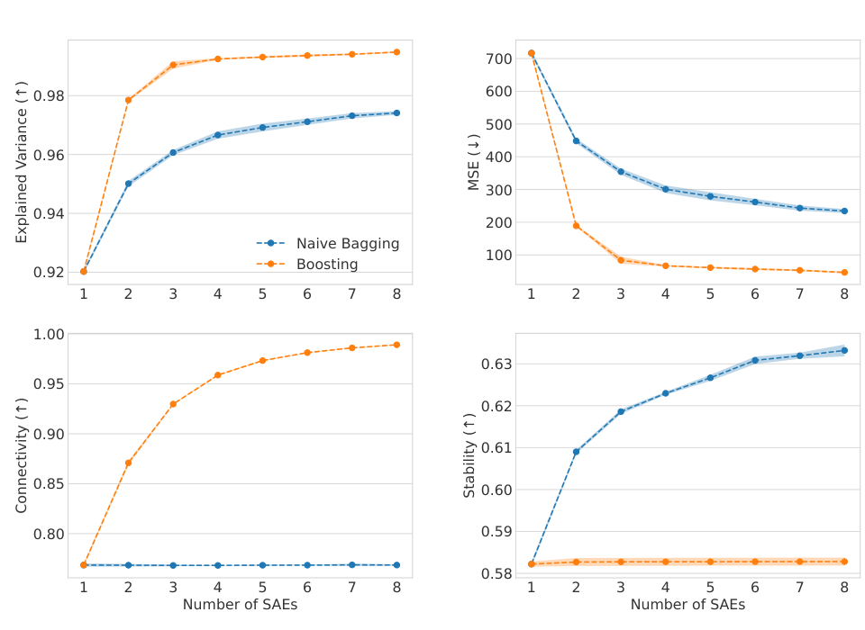

Naive bagging
Train SAEs on the same activations with different initial weights, then average their reconstructions. Training can run in parallel; no data bootstrapping is used.
ICML 2026
Paul G. Allen School of Computer Science & Engineering
University of Washington
* Equal contribution
One SAE captures only part of the picture.
Combine the features learned by multiple sparse autoencoders through naive bagging and boosting.

Sparse autoencoders decompose model activations into features that can support interpretation, but a single SAE recovers only a subset of the features available in an activation space. This work formalizes SAE ensembles and shows that combining reconstructions corresponds to concatenating features and feature coefficients. It introduces two approaches: naive bagging, which combines differently initialized SAEs, and boosting, which trains successive SAEs on residual errors. Theoretical results motivate both methods through reconstruction error. Experiments examine intrinsic quality, automated feature interpretability, concept detection, and spurious correlation removal, showing benefits that depend on the ensemble method and downstream task.
THE APPROACH
Train SAEs on the same activations with different initial weights, then average their reconstructions. Training can run in parallel; no data bootstrapping is used.
Train each successive SAE to reconstruct the residual left by the earlier SAEs. Sum their reconstructions. Training and inference proceed sequentially.
Concatenate decoder feature dictionaries and appropriately weighted feature coefficients. This provides a feature-space representation of the ensemble.
To distinguish ensembling gains from simply having more features, the main baseline is an expanded SAE with the same total feature count and comparable sparsity.
EXPERIMENTS
Intrinsic evaluations pair GELU-1L with ReLU SAEs, Pythia-160M with TopK SAEs, and Gemma 2-2B with JumpReLU SAEs. Ensembles contain eight SAEs. All tables report means ± 95% confidence intervals across five runs.
| Method | Explained variance ↑ | MSE ↓ | Connectivity ↑ | Stability ↑ |
|---|---|---|---|---|
| GELU-1L | ||||
| Expanded SAE | 0.946 ± 0.0003 | 17.893 ± 0.137 | 0.959 ± 0.0003 | 0.372 ± 0.0022 |
| Naive bagging | 0.895 ± 0.0006 | 35.147 ± 0.210 | 0.307 ± 0.0009 | 0.745 ± 0.0002 |
| Boosting | 0.961 ± 0.0018 | 12.542 ± 0.589 | 0.945 ± 0.0004 | 0.707 ± 0.0014 |
| Pythia-160M | ||||
| Expanded SAE | 0.987 ± 0.0041 | 4.387 ± 1.486 | 0.978 ± 0.0006 | 0.204 ± 0.0006 |
| Naive bagging | 0.929 ± 0.0000 | 24.704 ± 0.019 | 0.912 ± 0.0006 | 0.731 ± 0.0017 |
| Boosting | 0.998 ± 0.0021 | 0.845 ± 0.547 | 0.986 ± 0.0004 | 0.680 ± 0.0025 |
| Gemma 2-2B | ||||
| Expanded SAE | 0.948 ± 0.0012 | 472.330 ± 10.759 | 0.993 ± 0.0003 | 0.268 ± 0.0021 |
| Naive bagging | 0.974 ± 0.0006 | 234.128 ± 6.228 | 0.769 ± 0.0007 | 0.633 ± 0.0014 |
| Boosting | 0.995 ± 0.0003 | 46.538 ± 2.923 | 0.989 ± 0.0003 | 0.583 ± 0.0009 |
Boosting improves mean reconstruction and stability over the expanded SAE in all three settings. Naive bagging has the highest stability, but its reconstruction and connectivity results depend on the setting.

Automated interpretability directly assesses learned features rather than relying on aggregate sparsity as a proxy.
| Method | GELU-1L | Pythia-160M | Gemma 2-2B |
|---|---|---|---|
| Expanded SAE | 0.714 ± 0.051 | 0.852 ± 0.006 | 0.805 ± 0.002 |
| Naive bagging | 0.738 ± 0.147 | 0.857 ± 0.004 | 0.799 ± 0.008 |
| Boosting | 0.863 ± 0.005 | 0.852 ± 0.018 | 0.814 ± 0.002 |
Boosting matches or exceeds the expanded SAE’s mean score across these settings. Bagging’s mean score is slightly lower on Gemma 2-2B, with overlapping intervals.
DOWNSTREAM APPLICATIONS
Using Pythia-70M activations, a logistic regression classifier detects a concept from the selected SAE features. Accuracy is reported as a proportion.
| Method | Amazon reviews Sentiment ↑ | GitHub code Language ↑ | AG News Topic ↑ | European Parliament Language ↑ |
|---|---|---|---|---|
| Expanded SAE | 0.600 ± 0.032 | 0.682 ± 0.025 | 0.746 ± 0.021 | 0.942 ± 0.009 |
| Naive bagging | 0.631 ± 0.036 | 0.715 ± 0.012 | 0.742 ± 0.037 | 0.943 ± 0.016 |
| Boosting | 0.624 ± 0.037 | 0.682 ± 0.021 | 0.759 ± 0.021 | 0.920 ± 0.015 |
| Method | Amazon reviews Sentiment ↑ | GitHub code Language ↑ | AG News Topic ↑ | European Parliament Language ↑ |
|---|---|---|---|---|
| Naive bagging | 0.655 ± 0.035 | 0.718 ± 0.018 | 0.765 ± 0.041 | 0.943 ± 0.011 |
| Boosting | 0.658 ± 0.024 | 0.725 ± 0.016 | 0.803 ± 0.019 | 0.963 ± 0.010 |
The feature-selection procedure matters: bagging generally has higher mean accuracy with a single feature, while boosting has higher means across all four tasks when two features are used. Several confidence intervals overlap.
On Bias in Bios, the top 20 gender-related features are ablated to reduce a profession classifier’s reliance on spurious gender associations. The normalized SHIFT score measures improvement relative to the gap between a biased classifier and an oracle trained on balanced data.
| Method | Professor / Nurse ↑ | Architect / Journalist ↑ | Surgeon / Psychologist ↑ | Attorney / Teacher ↑ |
|---|---|---|---|---|
| Expanded SAE | 0.047 ± 0.014 | 0.006 ± 0.005 | 0.037 ± 0.009 | 0.021 ± 0.007 |
| Naive bagging | 0.021 ± 0.003 | 0.004 ± 0.001 | 0.014 ± 0.002 | 0.003 ± 0.005 |
| Boosting | 0.066 ± 0.016 | 0.013 ± 0.011 | 0.045 ± 0.014 | 0.029 ± 0.003 |
Boosting has the highest mean SHIFT score for each profession pair. Bagging underperforms the expanded SAE here, illustrating that stronger intrinsic metrics do not ensure stronger downstream performance.
Ensembling requires training multiple SAEs. Bagging supports parallel execution; boosting requires sequential computation and can learn features too specific for single-feature concept detection. Refer to the paper for the full discussion and additional SAEBench evaluations, including RAVEL, cross-entropy loss, and targeted probe perturbation.
@inproceedings{gadgil2026ensembling,
title = {Ensembling Sparse Autoencoders},
author = {Gadgil, Soham and Lin, Chris and Lee, Su-In},
booktitle = {Proceedings of the 43rd International Conference on Machine Learning},
series = {Proceedings of Machine Learning Research},
volume = {306},
year = {2026},
url = {https://arxiv.org/abs/2505.16077}
}